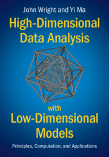

| 
|
|
High-Dimensional Data Analysis with
Low-Dimensional Models:
Principles, Computation, and Applications
|
Basic Information
The book covers new mathematical and computational principles for high-dimensional data analysis (statistics
and geometry), scalable optimization methods (convex and nonconvex), and important applications such as
scientific imaging, wideband communications, face recognition, 3D
vision, and deep networks. This book is to be used as an introductory graduate textbook for the
areas of data science, signal processing, optimization, and machine
learning. It has been used as textbook for courses at UC Berkeley, Columbia University, and University of Michigan etc.
Download and Copyright
Download a pre-production copy: Book-Wright-Ma on Github or Book-Wright-Ma on Dropbox (version last updated on 2021-04-22).
A complete version of the manuscript was first released here online on December 06, 2020. The latest version reflects small changes made to the original.
Copyright statement:
This material will be published by Cambridge University Press as
"High-Dimensional Data Analysis with Low-Dimensional Models:
Principles, Computation, and Applications" by John Wright
and Yi Ma. This pre-publication version is free to view and download for
personal use only, and is not for redistribution, re-sale or use in
derivative works. Copyright ©Cambridge
University Press 2018.
Citation (bibtex):
@book{Wright-Ma-2021,
author = {John Wright and Yi Ma},
title = {High-Dimensional Data Analysis with Low-Dimensional Models:
Principles, Computation, and Applications},
publisher = {Cambridge University Press},
year = {2022}
}
Catalog Links
The book is currently under production. Hardcopy of the book is available for pre-order at
the book website of Cambridge University Press.
Resources and Errata
Related courses and teaching support materials (future instructors: if you plan to use the textbook for your courses, please send us your course websites to share here):
Some old course websites:
Reader's feedback: If you have any feedback, suggestions, or
errors to report, please send us an email to: book.wright.ma@gmail.com.
Book errata: TBA.
©2020 Yi Ma
Last modified: Sun April 22 11:15:08 PST 2021